Worn oak, worn title, and a texture bug fixed
The lantern hangs from an iron scroll bracket on a broad oak post with grain, knots and cracks. The title is old scuffed bronze with gilt left in patches. A bug in the Blender box helper had left every bevelled box with one flat colour; fixing it is why the post, chest and crates now show their textures.

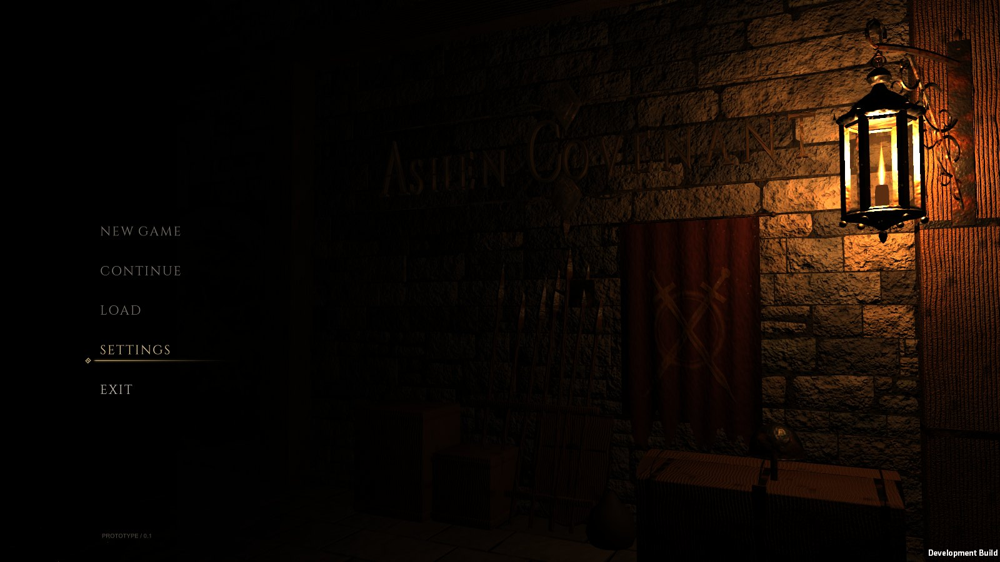

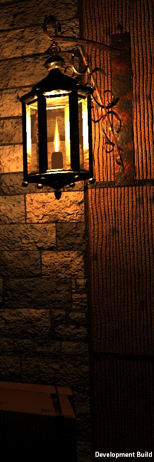

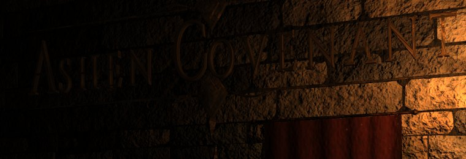
- Not yet: a playtest by hand, lower-end graphics cards, music. Whether the left end of the title is too dim is your call.
Dialogue box in the game (15 October)
Conversations can now be placed in a scene: walk near, press E, and the box opens with typing, choices and links to further conversations. While it is open, walking, the camera, saving and all combat (enemies included) pause; the day clock keeps running. Two faults in the box were fixed: the E that opened it no longer skips the first line, and a choice that starts another conversation no longer skips its first line. The first use is narration only, at the memorial on the guild gallery. Iroha is unchanged and there is no tour guide yet.

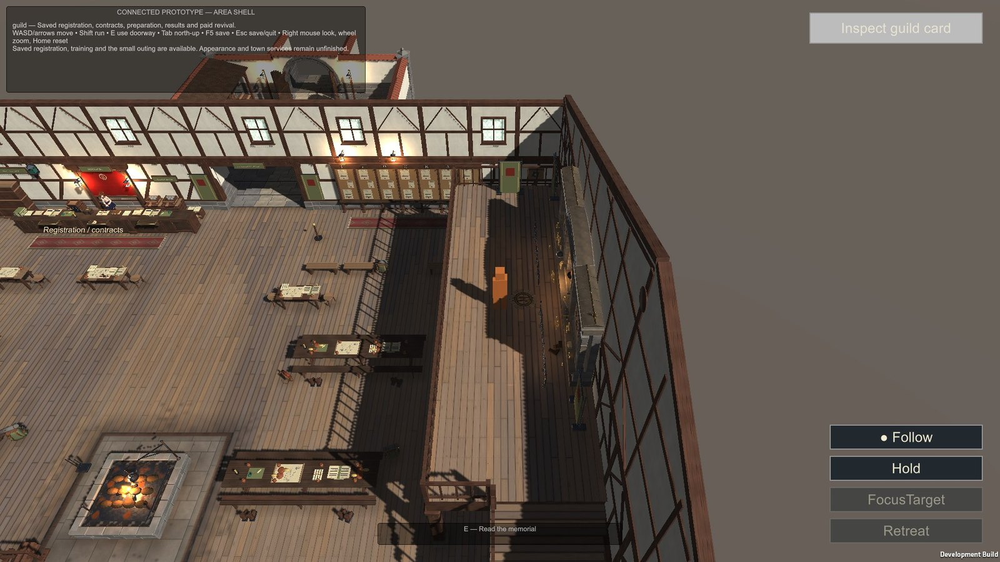

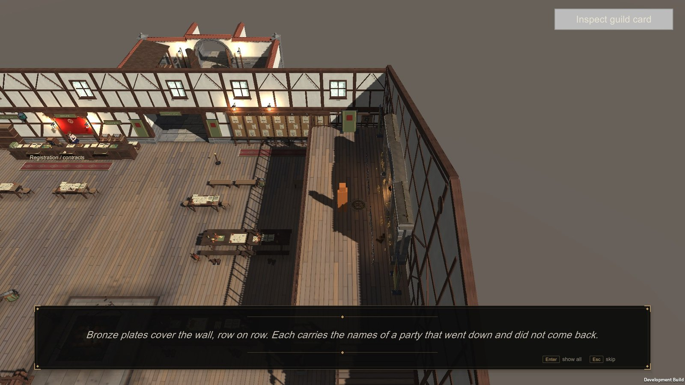

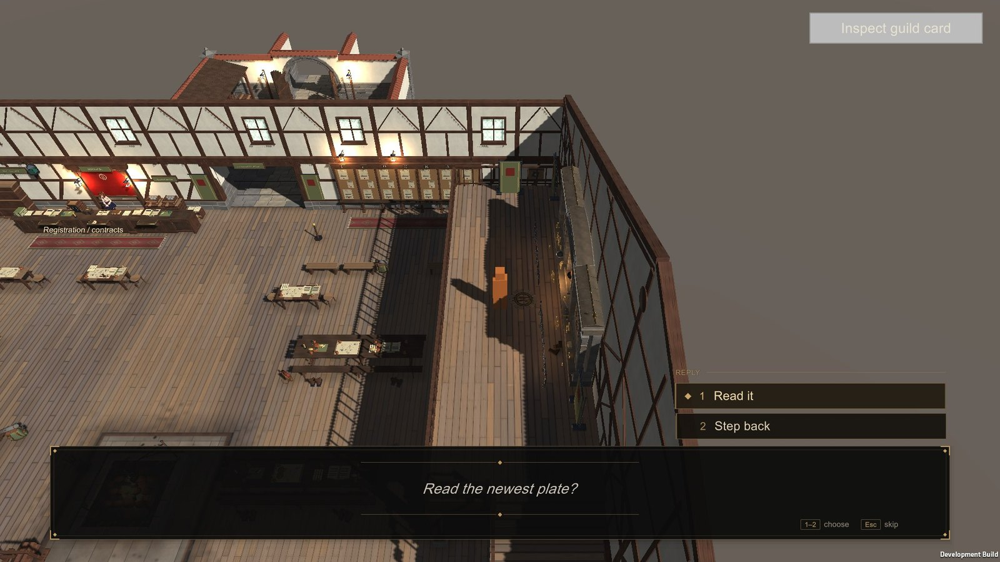

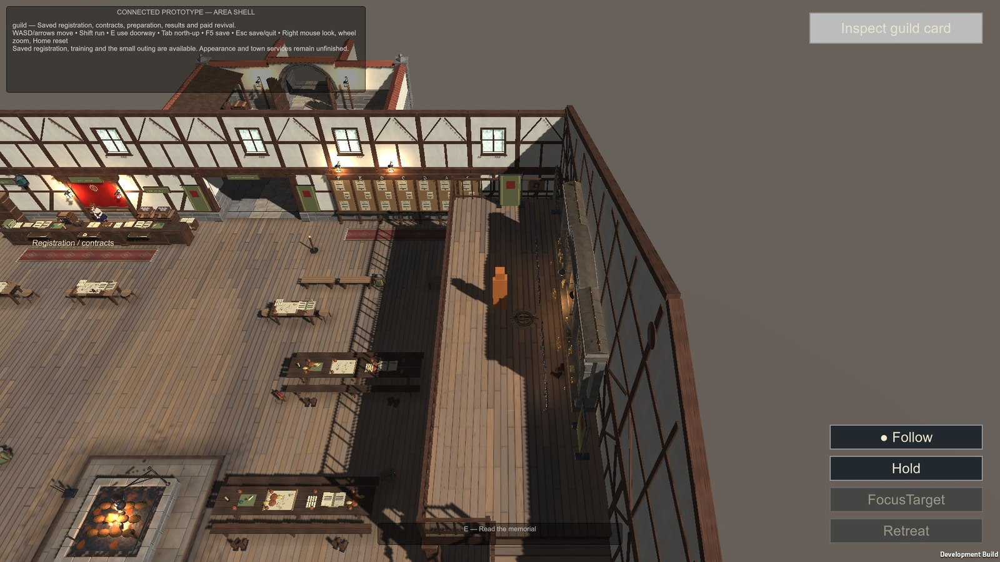
- Checks: 296 of 296 at 1920 × 1080 and 1280 × 720 with simulated keys, and the game's journey suite 755 of 755. Not yet: keys pressed by hand, gamepad. It is in a review player, not yet in the main game build.
EarlierA real flame and the selection line
The modelled flame read as plastic. It is now two glowing cards painted from a real candle: a blue base, a white core, an orange body and a reddening tip. The selection line is one fine gold hairline that draws out from a small diamond.

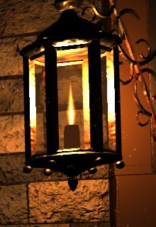

EarlierDungeon pass
Rougher, older stone with water streaks, moss and chips; a dark vaulted corridor at the left; the guild mark on the banner; and a dimmer title that the lantern reveals when its light swells every 6 to 11 seconds.

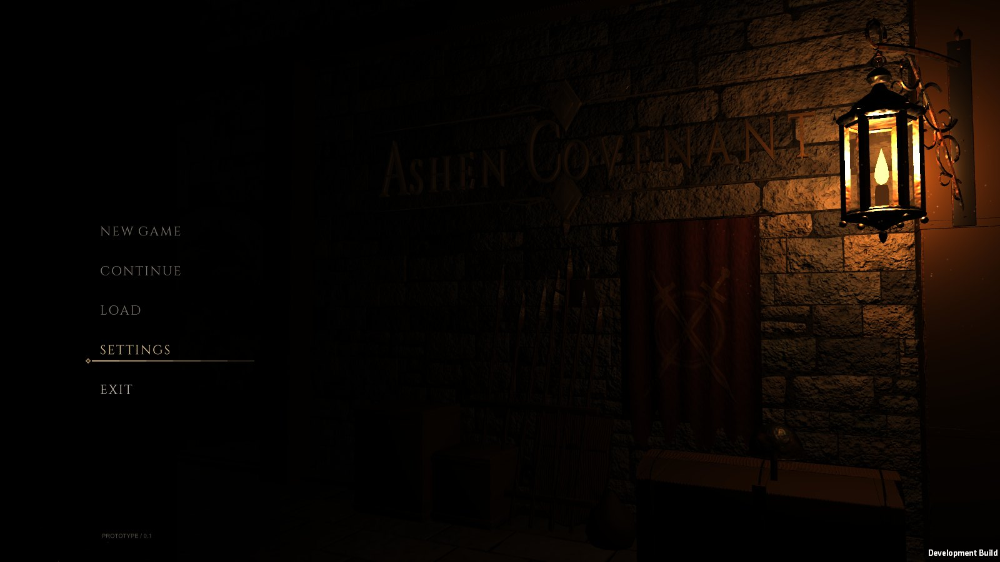

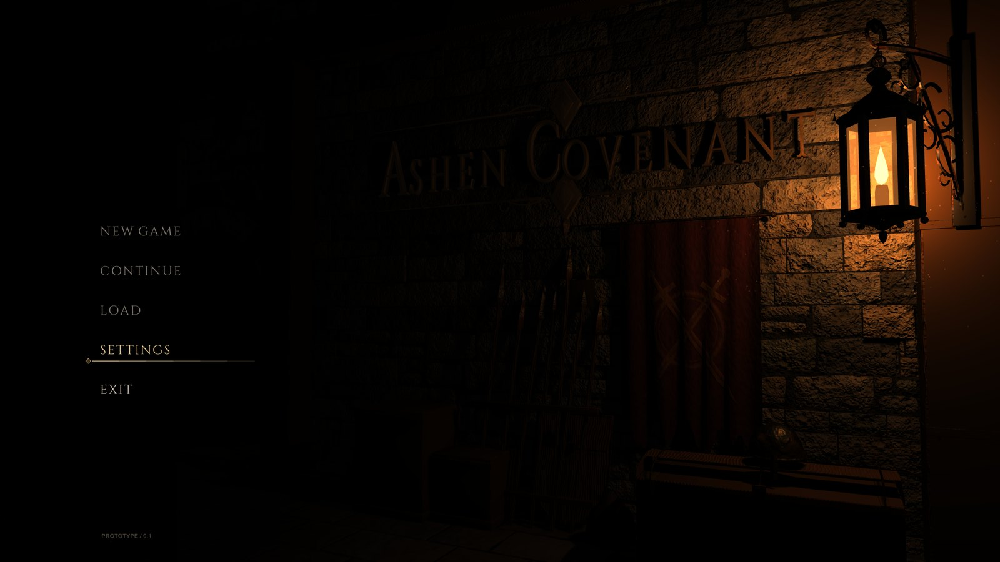

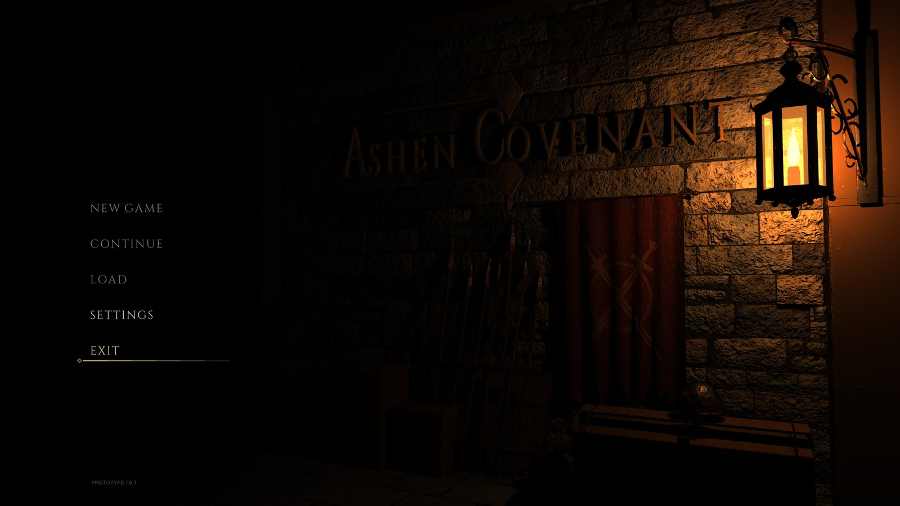
EarlierRefined toward the concept, MR1 to MR6 (15 October)
Framing, title, lantern, stone, props and light, each with fresh critics and two reruns. Camera, title, lantern and props are now placed by projection against the concept, and the light is graded to its measured brightness. The dust never rendered because the project has no particle module, so the motes are now a scripted mesh.

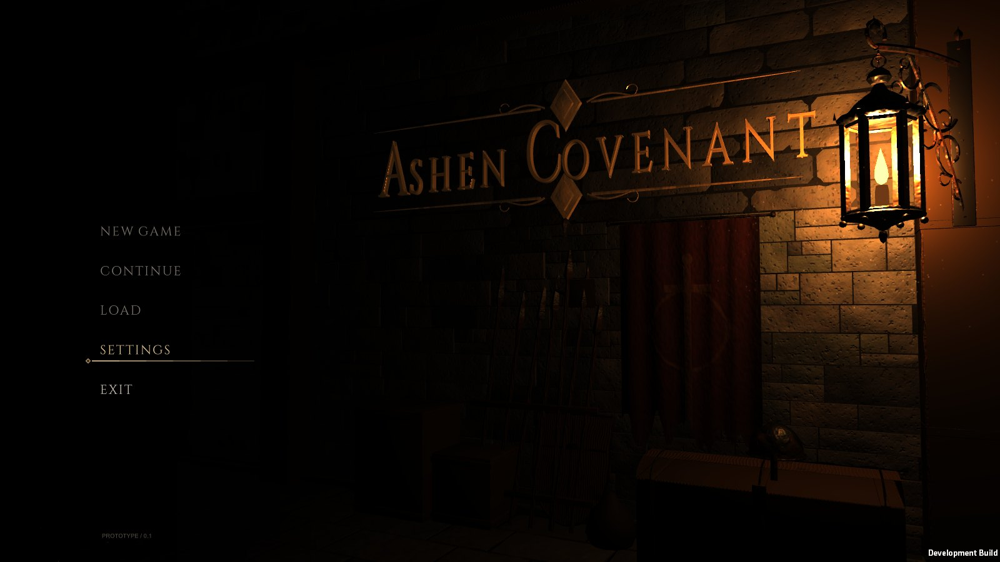
EarlierThe menu from your concept (14 October)
An old guild-hall wall in near darkness, the title in raised gilt bronze set in Cinzel, and one iron lantern as the only light, with soft shadows, flicker and drifting dust. A banner, spears, a shield and a chest stand below. Five items: New Game, Continue and Load (disabled until saves exist), Settings and Exit.

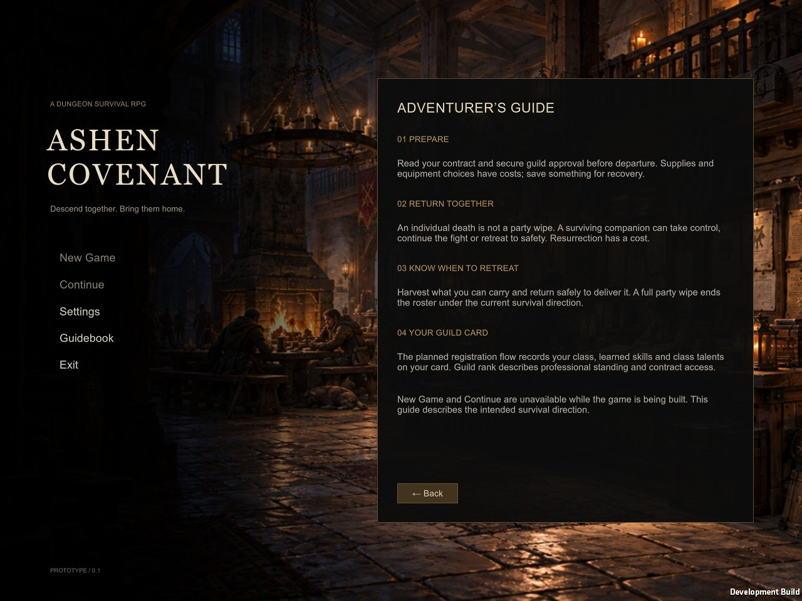